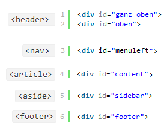

Web-basierte Anwendungen 1
HTML5-Spezial
13. Dezember 2012
Studiengang Medieninformatik an der Fachhochschule Köln
Campus Gummersbach
Eduard Karsten
Munish Luthra
Inhalte
- HTML5 - Semantic/Structural Elements
- HTML5 - New Media
- erweiterte Formulare
HTML5 - Semantic/Structural Elements
Warum?
- Bessere Lesbarkeit des Html-Codes
- Strukturierung des Inhalts nach logischer Zusammengehörigkeit
- Vermeidung des exzessiven Gebrauchs von "divs"
- Suchmaschinen freundlicher
Beispiel
Einsatz der Strukturelemente

HTML5 - New Media
- <video> </video>
- <audio> </audio>
erweiterte Formulare
- <label> </label>
- <select> </select>
- <option> </option>
- <optgroup> </optgroup>
- Neue Typen für <input>
- type="date"
- type="tel"
- type="url"
- placeholder anstatt value